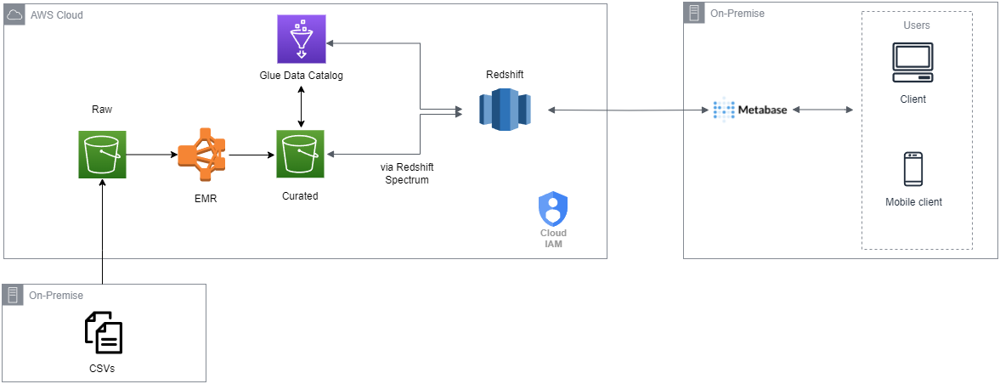

Área de Projetos
Premissas, ferramentas e soluções serão apresentadas
Premissas
O projeto se trata sobre a Análise de Dados de um case de aluguel de bicicleta pela empresa Divvy em Chicago entre os anos de 2014 e 2017.
O principal objetivo desse projeto é entender melhor o perfil situacional da utilização das bicicletas, o perfil do usuário e um pouco mais sobre as principais estações que são utilizadas por esses usuários.
Ao todo, o projeto foi separado em 3 fases:
- Arquitetura de Dados
- Entendimento e Processamento dos Dados
- Análise dos Dados
Principais Ferramentas:
- AWS
- PySpark
- SQL
- Metabase
Arquitetura de Dados
Nessa etapa, o objetivo foi desenhar a arquitetura, isto é, o caminho pelo qual os dados partiriam desde o computador até a disponibilização para a ferramenta de visualização de dados. Abaixo, pode-se observar o desenho dessa arquitetura:
- Tudo se inicia com o download dos dados do case Chicago Divvy no Kaggle.
- Após isso, os dados são inseridos em um bucket, chamado de Raw, no S3 dentro da AWS. Esses dados chegarão brutos, em .csv, e serão processados pelo EMR (Elastic Map Reduce) e serão salvos em .parquet em outro bucket no S3, chamado de Curated.
- A partir desse dado em .parquet, haverá um acionamento de um crawler no Glue, responsável por entender a estrutura e o tipo dos dados, para catalogar como esses dados estão dispostos no arquivo e qual é o formato de cada uma das colunas.
- Seguindo o caminho dos dados até a visualização, faz-se necessária a utilização do Redshift Spectrum, que permite a leitura de arquivos no S3 pelo Redshift ao se criarem schemas e tabelas externas, com o auxílio do catálogo prévio do Glue. A partir desse processo, os dados que foram catalogados no Glue e estão presentes no S3, podem ser lidos e disponibilizados no RedShift.
- Por último, a ferramenta de visualização escolhida foi o Metabase, pelo fato de ser open source e trabalhar com o SQL, que é uma ferramenta que também buscava desenvolver e expor. Para que o Metabase pudesse funcionar, foi utilizado o Docker e a partir da imagem metabase/metabase rodando na porta 3000 do localhost, houve a possibilidade de utilização dele. A conexão no Metabase é feita de maneira bastante simples, conectando ao database do Redshift e fazendo queries a partir dele.
Essa é uma arquitetura simples, mas cumpre o objetivo de se trabalhar quase inteiramente na nuvem, passando pelos processos de storage, processamento e disponibilização como um DW, pelo Redshift, até a conexão com a ferramenta de visualização, esta que poderia estar sendo utilizada num EC2, como um app no Elastic BeanStalk, numa app no Heruko, ou simplesmente na própria nuvem do Metabase, como seria o caso de uma versão online paga para o Power BI, Tableau e demais.
Entendimento e Processamento dos Dados
Esse case consiste em uma tabela única com 23 colunas, todas do tipo string, sendo:
- trip_id : o ID da viagem
- year : ano que ocorreu a determinada viagem
- month : mês que ocorreu a determinada viagem
- week: semana que ocorreu a determinada viagem
- day: dia que ocorreu a determinada viagem
- hour : hora que ocorreu a determinada viagem
- user_type: tipo de cadastro do usuário
- gender: gênero do usuário
- starttime: horário de início da viagem
- stoptime: horário de finalização da viagem
- tripduration: duração da viagem
- temperature: temperatura, em Fahrenheit, no momento da viagem
- events: tempo (clima) no momento da viagem
- from_station_id: ID da estação de origem
- from_station_name: nome da estação de origem
- latitude_start: latitude de origem
- longitude_start: longitude de origem
- dpcapacity_start: número de espaços para as bicicletas em cada estação de origem
- to_station_id: ID da estação de chegada
- to_station_name: nome da estação de chegada
- latitude_end: latitude de chegada
- longitude_end: longitude de chegada
- dpcapacity_end: número de espaços para as bicicletas em cada estação de chegada
Sabendo-se disso, a arquivo .csv, localizado no bucket Raw, foi processado no EMR, utilizando Pyspark, no Jupyter Notebook.
Buscou-se apenas o mínimo para a possível visualização posterior, sendo verificada a existência de nulos, que comprovou que não havia nulos nessa tabela.
Depois, houve a alteração dos tipos de dados das colunas, já que algumas deveriam ser numéricas e outras no formato de timestamp, como no caso do starttime e stoptime.
Ao final dessa etapa, foi gerado um novo arquivo, nesse caso .parquet e ele foi salvo em outro bucket, chamado Curated.
Análise dos Dados
Com os dados disponíveis no RedShift , conecta-se ao Metabase e o foco se vira para a análise em si. Com isso, alguns cruzamentos entre os dados foram realizados para bucar extrair informações relevantes, entre eles:
1 - Quantidade de utilizações por ano

O gráfico demonstra a variação da quantidade de utilização do serviço ao longo dos anos. A partir dele, pode-se notar um aumento gradativo ao longo dos anos, sendo 2017 correspondente a quase o dobre de utilizações de 2014.
2 - Quantidade de utilizações por mês e pela média da temperatura

Pode-se perceber ao observar o gráfico que conforme a média de temperatura aumenta, o que parece ser ali o final da primavera até o final do verão, as pessoas tendem a utilizar mais o serviço. Isso pode se perceber empiricamente em locais frios como o caso de Chicago, já que com as baixas temperaturas, atividades ao ar livre se tornam mais raras, retirando da lista atividades que dependam do frio.
Logo, é intuito que a empresa que coordena o serviço foque mais sua estratégia nesses meses, já que a menos que ela não conseguirá com o fator externo, que no caso é o climático.
3 - Quantidade de utilizações por mês, pela média de temperatura e pela média da duração da viagem

Seguindo com a análise da utilização pela temperatura, agora há a adição de mais um fator, que é a média da duração da viagem. Cruzando os dados das 3 colunas conjuntamente, é possível perceber que assim como a quantidade de utilizações, o tempo média da duração da viagem também é aumentado no período de maiores médias de temperatura. Sendo, cerca de quase 30% maior em períodos mais quente quando comparado aos períodos mais frios.
Isso reforça o foco nesse período mais quente, que se estende desde maio até setembro, aproximadamente.
4 - Quantidade de utilizações pelo dia da semana

Esse e o próximo gráficos destacarão a relação da utilização das utilizações pelos dias e horas específicos para tentar entender um perfil. Nesse primeiro, pode-se notar uma característica interessante, as utilizações são cerca de 50% superiores em dias de semana que em finais de semana. O que poderia sugerir um efeito de utilização maior com a finalidade de deslocamento para o trabalho ou eventos sociais durante a semana.
5 - Quantidade de utilizações pela hora do dia

Continuando a análise do gráfico anterior, a premissa da utilização com a finalidade do trabalho é reforçada por esse gráfico, já que os horários de maior pico de utilização são entre 8-10 h e 16 - 18 h.
Analisando essas possibilidades, uma possível campanha de marketing ou descontos para aumentar a quantidade em horários de menores incidências poderiam ser interessantes.
6 - Quantidade de utilizações de acordo com o tempo (clima) do dia

O gráfico demonstra que a esmagadora maioria dos dias de utilização são dias nublados, o que ajuda a dedução de que a influência na utilização por conta de o tempo estar bonito ou não estar o mais apropriado é pequena ou nula.
7 - Quantidade de utilizações por gênero

Nota-se que a grande maioria das utilizações é realizada por homens. Seguindo-se a premissa que as utilizações tem seu foco no deslocamento para o trabalho, poderia se pensar, hipoteticamente, na possibilidade da mobilidade pela diferença na vestimenta entre homens e mulheres, principalmente em um ambiente formal. Ou ainda no fator segurança, por se tratar de uma cidade grande. Nesse caso, apenas hipóteses, que deveriam ser avaliadas para buscar soluções afim de aproximar o público feminino.
8 - Quantidade de utilizações por tipo de usuário

O gráfico implica que mais de 90% dos usuários são inscritos, isso pode implicar que a política de inscritos está funcionando e poderia ser melhor explorada e/ou as outras opções poderiam ser melhores exploradas ou descartadas. Os casos teriam que ser melhor abordados para se chegar na melhor política possível.
9 - 10 estações de partida com maior movimento

10 - 10 estações de chegada com maior movimento

O cruzamento dos dados geram, nesses gráficos, as 10 melhores possibilidades de investimento em uma oferta maior de bicicletas, visto que elas possuem maior volume de utilizações. Ainda mais, as 4 estações com maior volume de utilizações são as mesmas tanto para partida como chegada, o que poderia se explicar pela proximidade de grandes centros corporativos.
Mas, o foco deve se dar no quesito que por apresentarem um grande volume, uma maior oferta pode gerar maior número de utilizações e com isso maior retorno.
Conclusão
O projeto foi elaborado tendo a premissa de avaliar, a partir dos dados, a relação entre as utilizações, perfil e as estações, buscando entender melhor sobre possíveis melhoras em estratégias e ofertas de serviço. Para isso, foram utilizadas ferramentas, tais como Pyspark, SQL, AWS, Metabase para auxiliar na resposta desses questionamentos.
Após o trabalho com os dados e a análise, nota-se que o principal perfil dos usuários é de homens, inscritos, provavelmente utilizando para trabalho, entre 8-10 e 16-18, com utilizações maiores em períodos quentes (como final da primavera e verão), focados principalmente em 5 grandes estações, seja para partida ou para chegada.
Isso ajuda a entender o usuário atual, gerar personas melhores para o marketing e pensar em possíveis políticas e estratégicas de marketing, como a decisão de focar em ganhar um volume maior de usuárias femininas ou de tentar aumentar o público em horários de menor incidência de utilização através de campanhas de marketing mais efetivas ou descontos. Por final, mas não menos importantes, uma possível estratégia de um aumento de oferta nas principais estações de partida e chegada, dados os volumes apresentados.
Com o intuito de avançar com a ideia do projeto, poderia se gerar uma discussão e avaliar alguns indicadores (KPIs) para que fossem observados ao longo do tempo e que pudessem estar disponíveis em um dashboard, que poderia ser gerado no próprio Metabase (ou outra ferramenta de visualiação).